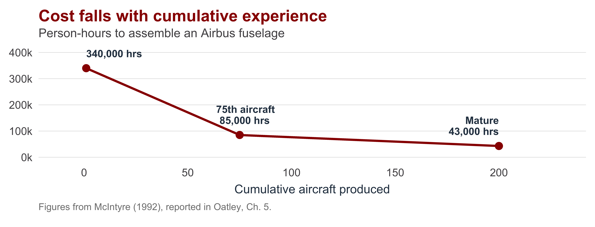
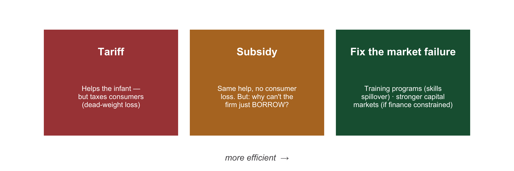
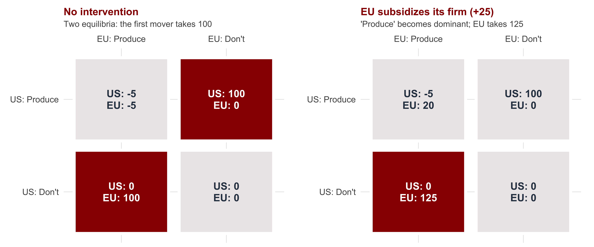
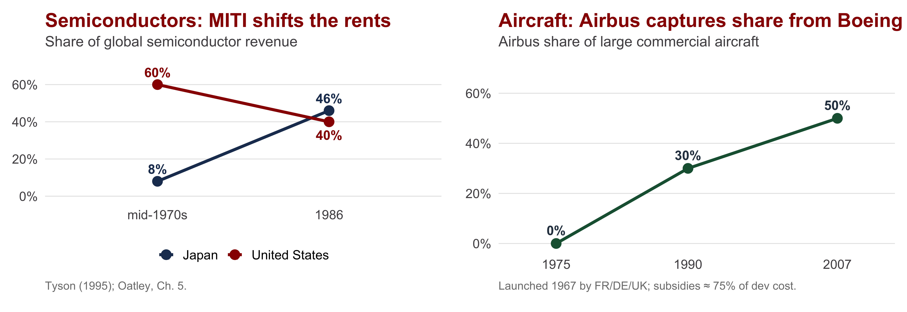
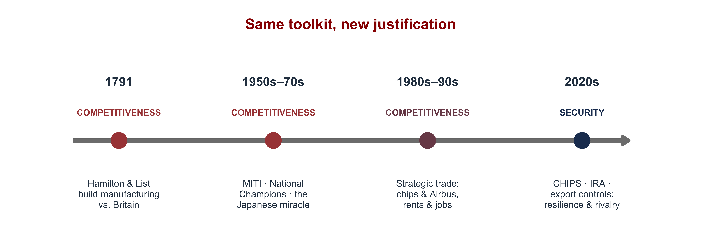
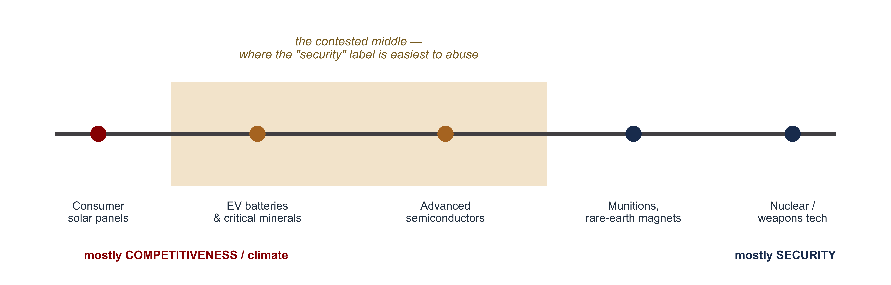

| Section | What we'll cover |
|---|---|
| 1 · The Limits of Society-Centered Politics | When two export firms fight over subsidies, whose interest is the state serving? |
| 2 · Infant Industries and Industrial Policy | When a tariff can *raise* welfare — and which states are equipped to do it |
| 3 · Strategic-Trade Theory | Rents, first-movers, and using subsidies to capture an oligopoly |
| 4 · From Competitiveness to Security | Why the same tools are now justified on security, not competitiveness, grounds |
| 5 · The Political Economy Objections | Picking winners, rent-seeking, and what the new evidence shows |
| 6 · Weaknesses + Handoff | What this approach can't explain — and the bridge to contemporary technology wars |
A State-Centered Approach to Trade Politics
INTL 503 | Chapter 5
Professor Sarah Bauerle Danzman
July 13, 2026
Today’s Plan
Today’s Big Question
When, why, and to what effect do states have their own preferences toward trade policy
The Limits of Society-Centered Politics
Boeing vs. Bombardier, or U.S. vs. Canada?
2017–18: Boeing vs. Bombardier. Boeing asks Washington to impose ~300% tariffs on Bombardier’s new C-Series jet — not because Boeing is an import-competing loser, but because Canada subsidized a rival in a market both want to dominate.
- Not import-competing industry vs. foreign exporter
- Two export-oriented firms fighting over global market share
- Tariffs as retaliation over a subsidy rather than proactive protection
Boeing’s trade complaint had the opposite of its intended effect: pressured by the dispute, Bombardier sold the C-Series to Airbus — exchanging a midsize competitor for a far stronger one. (The jet now flies as the Airbus A220.)
The society-centered model asks which lobby won. Here both firms are powerful exporters, and the contest is over which country’s firm captures the industry’s rents.
Rents = returns above what the same capital and labor would earn in their next-best use — the excess profits of a protected market position.
To explain this conflict we need a theory in which the state has goals of its own (not just an aggregator of societal interests) — and in which protection can sometimes make a country richer.
The State-Centered Approach: Two Core Claims
| Society-Centered (Ch. 4) | State-Centered (Ch. 5) | |
|---|---|---|
| 1 · Protection can RAISE welfare | Protection always destroys welfare — it forfeits the gains from trade and traps resources in losing industries. | Under specific conditions (scale, learning, rents), targeted intervention can move resources where the market won't, increasing country-level aggregate welfare. |
| 2 · The state can act ON ITS OWN | Policy is the outgrowth of interest-group pressure. The state has no goals of its own. | Under specific conditions, insulated policymakers pursue a *national* objective that no lobby asked for. |
Both claims must hold jointly:
- If protection cannot raise welfare, intervention is pointless.
- If the state cannot act autonomously, the account reduces to society-centered lobbying.
Revisiting Core Assumptions - Market Failures Everywhere
Recall Day 3 (Ch. 3): the gains-from-trade verdict — do not intervene — rested on three assumptions we flagged as contested. The state-centered approach is favored by those who focus on the limits of those assumptions.
| Assumption | What Day 3 assumed | How Ch. 5 relaxes it → |
|---|---|---|
| Market clearing | Factors are allocated to their best use; no lasting unemployment — so a tariff can only destroy value. | Scale + learning curves strand factors below their long-run value — a social-vs-private return gap the market won't close without public guidance. |
| Constant / decreasing returns | Markets are competitive: many firms, no market power. | High-tech runs on increasing returns and oligopoly. A few firms earn rents, and the country that hosts them captures the income. |
| Neutral terms of trade | Doesn't really matter what goods you specialize in. | National wealth accrues when countries can move up the value chain. Staying stuck in primary production is bad for wealth and growth. |
Relax perfect competition and constant returns and the case for free trade becomes more complicated and less absolute.
Infant Industries and Industrial Policy
The Infant-Industry Case
A new industry may be unprofitable today but efficient tomorrow — if it survives long enough to grow up. Two mechanisms create that gap:
Economies of scale
Big fixed costs (an aircraft program ≈ $3B+). Unit cost falls only at high volume. A new entrant can’t reach that volume against incumbents who already have.
Economies of experience
Efficiency comes from doing — seasoned managers, skilled workers, reliable suppliers. The learning curve accrues through cumulative production; it cannot simply be purchased.
Recall Mercantialism: Alexander Hamilton (1791) and Friedrich List both sought tariffs to develop manufacturing against a dominant Britain — and the same argument was later applied to postwar Japan.
Climbing the Learning Curve

The newcomer’s dilemma: costs fall only with volume, but volume is unattainable while costs remain high. A temporary tariff or subsidy can solve this “low-level equilibrium trap” .
A Tariff Is Rarely the Best Tool

The economists’ rule: target the actual distortion.
- A profitable-but-cash-starved firm should borrow — and if financing is the binding constraint, the government can subsidize the borrowing itself (a loan or guarantee), not the output.
- A skills-spillover problem needs workforce training, not a tariff.
- Intervention is justified only where a real market failure creates a major coordination problem (government needs to make both the demand and supply side of the market).
State Strength: Who Can Actually Do This?
Industrial policy = tax breaks, subsidies and state credit, protection, and procurement, used to steer resources toward favored industries.
Whether a state can do so depends on state strength — how insulated policymakers are from interest groups.
| State | Institutions & track record | Insulation |
|---|---|---|
| Japan — STRONG | Centralized authority; MITI/METI + Ministry of Finance coordinate. "Administrative guidance" steered capital from heavy industry (1950s) to high-tech (1970s). | High |
| France — STRONG | Insulated bureaucracy; "National Champions" strategy. Backed Renault, steel — and a national computer firm (Machines Bull) that flopped. | High |
| United States — WEAK | Federalism + divided powers + porous agencies → captured easily. Yet runs a *de facto* industrial policy through DEFENSE: R&D, procurement, the internet, early chips. | Low (but the Pentagon is a loophole) |
Strength cuts both ways. Insulation lets a state plan for the long run and pull protection once the infant matures — but it also removes the check that stops the state from picking badly.
Strategic-Trade Theory
When Markets Have Room for Only a Few
Strategic-trade theory (Krugman; Brander & Spencer 1985) extends the infant-industry logic to oligopoly — industries with room for only a handful of firms.
- Big scale + steep learning ⇒ only 2–3 firms worldwide can survive (aircraft: ~2; autos: ~8)
- These firms earn rents — profits above what the same capital and labor earn elsewhere
- Whoever hosts the firm captures the rents as national income
- So there’s a zero-sum race: only a few countries can win
Absent intervention, the first mover wins — early scale and experience let it deter every later entrant, even one that would have been just as good.
The core policy idea: a government can use a subsidy to shift the rents from a foreign firm to a domestic one — making its own country richer at the rival’s expense.
The Rent-Shifting Game

A subsidy of 25 relocates rents of 125 and induces the rival’s exit. This is the formal case that intervention can raise national income.
Rent-Shifting in the Wild: Chips and Jets

The U.S. built both industries first — through defense procurement. Japan (MITI) and Europe (Airbus) then used protection and subsidy to capture a share of the rents. This generates international political conflict over industrial policy. Previously, the US used the GATT/WTO largely to try to reverse other countries’ industrial policies. Now, US is increasingly taking a “if you can’t beat ’em, join ’em” attitude.
From Competitiveness to Security
Same Tools, New Objective

For two centuries the case for industrial policy was economic — growth, productivity, competitiveness, rents. Since roughly 2017 the dominant case has become strategic — supply-chain resilience, chokepoints, and not depending on a rival.
Why Policy Makers Now See Dependence as Vulnerability
Trade always created security externalities — but whether interdependence contributes to peace or vulnerability depends on the geopolitical environment.
Liberal Internationalism (1990s)
Interdependence as mutual restraint. Gains from trade bind rivals together. Depending on others is efficient.
Economic Security (now)
Networks have chokepoints. The state that controls a hub — the dollar, SWIFT, advanced chips — can deny a rival access or surveil the flows passing through it (Farrell & Newman 2019, weaponized interdependence).
Trade follows the flag. Free trade is more likely within alliances than across them — because trade with an ally strengthens you, trade with a rival strengthens them (Gowa & Mansfield 1993; Hirschman 1945).
It’s not just states. Carnegie & Gaikwad (2022) — Day 4’s article — find the same pattern at the individual level: ordinary citizens are more supportive of trade with allies than with geopolitical rivals, even holding the economic terms of the deal constant.
The same dependence — on foreign chips, e.g. — may be interpreted as efficient specialization among allies and as a strategic liability among rivals.
The New Toolkit — and the New Vocabulary
| Instrument | What it does — and why |
|---|---|
| CHIPS & Science Act (2022) | USD 52.7B for domestic semiconductors (USD 39B in subsidies, a 25% tax credit, plus R&D), with "guardrails" barring expansion in China. |
| Inflation Reduction Act (2022) | Hundreds of billions in clean-energy subsidies with domestic-content rules — climate policy *and* competition with China rolled together. |
| Export controls (Oct. 2022 →) | Bars sales of advanced chips and chip-making tools to China. The goal is not to capture rents but to deny a rival a capability. |
| "Small yard, high fence" | Sullivan's framing (2023): restrictions stay narrow and security-focused; a "New Washington Consensus" replaces reflexive liberalization. |
Note the shift in objective. Classic industrial policy seeks to build domestic winners; export controls seek to deny rivals a capability.
Can the Line Be Drawn?

The slippery-slope risk: once “security” considerations overriding the market, almost any industry can invoke it. A criterion that applies to everything constrains nothing — and protectionist interests have strong incentives to adopt the language of security.
The Political Economy Objections
Three Reasons Industrial Policy Often Fails
- Picking winners (the knowledge problem). Effective intervention requires identifying the right sector and calibrating the right subsidy. Governments are frequently poor at both, and misjudged targeting misallocates capital.
- Rent-seeking & capture (Krueger; Olson). Once subsidies are available, firms have incentives to compete for them through lobbying rather than innovation; political connections, not productivity, can determine who benefits.
- The exit problem. Protection meant to be temporary tends to persist, as protected firms become a standing constituency for its continuation.
The underlying difficulty: industrial policy is designed for an idealized government but implemented by the actual one — subject to capture, short time horizons, and difficulty reversing failed commitments.
Dani Rodrik (most pro-industrial policy elite economist): the decisive question is less whether a state can pick winners than whether it can let losers go.
The Theory Suggests Targeted Interventions
The strategic-trade case for subsidies is not only hard to implement but theoretically limited.
| Change one assumption… | …and the optimal policy reverses | |
|---|---|---|
| Firms compete on QUANTITY (Cournot) | Brander & Spencer (1985): SUBSIDIZE your firm | Subsidy shifts rents home |
| Firms compete on PRICE (Bertrand) | Eaton & Grossman (1986): TAX your firm | Subsidy is counterproductive; the opposite policy is optimal |
Why the reversal? Cournot (quantity) firms treat output as a strategic substitute — a subsidy commits your firm to more, so the rival cuts back. Bertrand (price) firms treat price as a strategic complement — subsidizing triggers a mutual price war instead, so the fix is a tax on your own firm (not a tariff on the rival), committing it to a higher price the rival then matches. An assumption this subtle can flip the answer — proceed only where the failure and payoff are both large.
Subsidy wars happen — see EVs. China subsidized EV/battery champions for years (CATL alone: ~$77M in 2018 → ~$809M in 2023), building ~70% of world EV output and millions of surplus vehicles. The IRA (2022) answered with U.S. subsidies; 2024 brought 100% U.S. tariffs on Chinese EVs, 17–38% EU tariffs, and a matching 100% Canadian tariff. Rents dissipated across three governments at once.
Does Industrial Policy Work? Recent Evidence
Recent causal studies (Juhász, Lane & Rodrik 2024) reach more favorable conclusions than the earlier, largely skeptical literature — though their findings are strongly conditional.
Evidence it can work
- South Korea’s HCI drive (1973–79): Lane shows it durably shifted comparative advantage into heavy industry — benefits spread downstream and persisted after the policy ended.
- Juhász (Napoleonic blockade), Hanlon, and others find real, lasting effects in well-identified cases.
…but read the fine print
- These are successes studied carefully, not a promise of replication.
- Korea’s HCI was security-driven (North Korea, U.S. troop drawdown) — and still cost-laden and contested.
- Evidence of success in one case does not establish transferability; context, state capacity, and exit discipline are decisive.
The position emerging from this literature is conditional rather than categorical: industrial policy can succeed under conditions that must be specified. The debate has moved from whether it works to when and how.
Weaknesses + Handoff
Oatley’s Verdict: A Fatal Flaw?
- No microfoundations. The model asserts states act for national welfare. But why would autonomous officials enrich society rather than themselves? (Think Versailles.) What’s the reward structure?
- Autonomy is overstated. Even Japan’s MITI served the LDP’s big-business base. “Autonomous” states still answer to some coalition.
- Strategic-trade theory is weak. As shown above: sensitive to assumptions, hard to target, and reversible in sign.
Oatley’s view: the missing microfoundations are a fatal flaw. The approach tells us autonomous states will act — but not how they’ll act, or why toward welfare.
The fix may be to combine approaches: states with real autonomy, but acting within limits set by the coalition that keeps them in power.
Next: Semiconductors as the Test Case
We have developed the theory of state-centered trade. The presentation now applies it to the central industrial-policy case of the present moment — semiconductors.
Questions to consider during the presentation
- Is CHIPS-era policy best read as competitiveness, security, or both — and can Bown & Wang tell them apart?
- Where on today’s spectrum do chips fall — and who decides?
- Does the case look more like Korea’s HCI success or like a picking-winners / rent-seeking trap?
- What would count as this policy working — and is there an exit?
Student-led article presentation
Bown, C. P. & Wang, D. (2024). “Semiconductors and Modern Industrial Policy.” Journal of Economic Perspectives 38(4): 81–110.
Then
In-class writing prompt
Writing Prompt: Competitiveness, Security, or Both?
Writing prompt. Consider the CHIPS and Science Act and U.S. Export Controls on Semiconductors. Are these policy interventions instances of competitiveness policy, security policy, or an inseparable fusion of the two — and does it matter which?
Use relevant concepts from today’s lecture to assess.
Looking Ahead
Next Class (Tuesday, July 14): Trade and Development
Chapters 6 & 7: Import Substitution, Export Orientation, and the Neoliberal Turn
- Why did import-substituting industrialization look like the obvious development strategy — and why did it fail?
- What let East Asia’s export-oriented model succeed where ISI didn’t?
- Did the neoliberal turn fix the underlying problem, or just trade one set of distortions for another?
Preparation — two readings plus a podcast:
- Oatley, Chapters 6 & 7
- Irwin (2021), “The Rise and Fall of Import Substitution” — the scholarly article posted on Canvas (student presentation)
- Ideas of India: V. Anantha Nageswaran on India’s growth & financialization
Guiding question: How should developing countries approach global market integration?

INTL 503 | A State-Centered Approach to Trade Politics